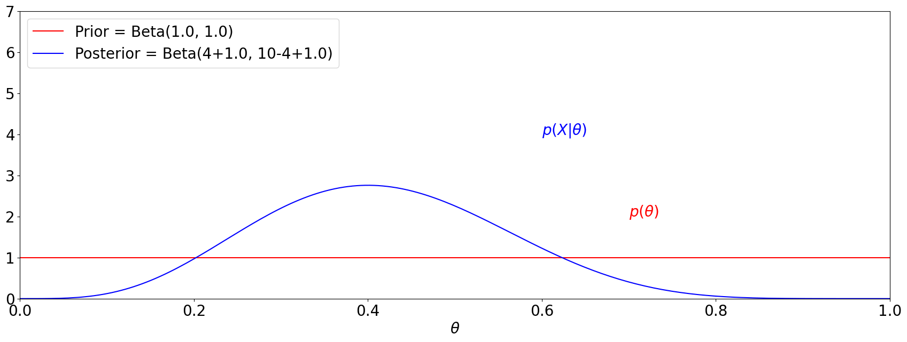

IEEE JSTSP Special Issue on Deep Multimodal Speech Enhancement and Separation
Taipei, IEEE ASRU 2023 Workshop Satellite Event, December 20th, 2023

Introduction
Tentative Schedule
A total of four and half hours after ASRU2023 at 14:00-18:30 on December 20
- Plenary Speaker: Chin-Hui Lee (30 minutes)
- Six Invited Speakers (Key contributions to Bayesian Learning in speech and language processing in the last 40 years): Qiang Huo, Torbjorn Svendsen (or Olivier Siohan), Shinji Watanabe, Koichi Shinoda, Jen-Tzung Chien, Marco Siniscalchi (15 minutes each for a total of 90 minutes)
- Panel Discussion: all seven invited speakers as panelists (30 minutes)
- Break and Social Discussions (30 minutes)
- Poster Session: 12-15 posters (90 minutes)
- Workshop Dinner: hosted by the Organizer right after rhe Symposium
| 14:00 | Historical Perspective & Beyond | C.-H. Lee |
| 14:30 | Online and Correlated HMMs | Q. Huo |
| 14:45 | Joint MAP of LR and HMMs | T. K. Svendsen |
| 15:00 | Variational Bayesian Learning | S. Watanabe |
| 15:15 | Structural MAP for LR & HMMs | K. Shinoda |
| 15:30 | MAP for N-grams and Beyond | J.-T. Chien |
| 15:45 | MAP for DNN Parameters | S.M. Siniscalchi |
| 16:00 | Panel Discussion | All 7 speakers |
| 16:30 | Break | |
| 17:00 | Poster Contributions | All participants |
| 18:30 | Closing |
Honorary Committee Chair
Georgia Institute of Technology
Invited Speakers
Microsoft Research
Norwegian University of Science & Technology
Carnegie Mellon University
Tokyo Institute of Technology
National Yangming Chiaotung University
Kore University of Enna
Organizers
Microsoft Research

Amazon
Tsinghua University
Academia Sinica
Academia Sinica
Submissions
All contributions to this Bayesian Celebration Workshop can be summarized in an abstract (limited to 200 words) to be published in the ASRU2023 Workshop Proceedings, 12-15 poster contributions with relevant topics to Bayesian Learning will be selected from submissions and reviewed by the Organizers. Presentation materials for each contribution, including an extended abstract or short paper with 1 to 3 pages, and a poster with references will be published on a symposium page hyperlinked to the ASRU website. Call for contributions will be sent to all potential participants and published in the ASRU website soon with a submission deadline of December 1st, 2023.
We welcome all submissions related to Bayesian learning, large models and generative models, including but not limited to:
- Bayesian methods for machine learning and deep learning
- In-context learning and generative models
- Adaptation and few-shot learning for speech and language processing
- Theory and parameter efficient tuning for large speech and language models
- Multimodal intelligence across audio, text, and vision
Submissions and accepted papers - Workshop submissions and reviews will be private. The camera-ready version of accepted papers will be shared on the workshop webpage. However, the hosting is not an official proceeding so the papers can be subsequently / concurrently submitted to other venues.
In-person presentation - Accepted extended abstracts and papers are expected to be presented in person. Online Presentation is exceptional based on visa difficulties.
Submission Deadline: December 1st, and acceptance will be notified within one week after submission.
Registration
Participants need to register separately from the main ASRU Workshop. A fee of USD$120 (covering Workshop, Proceedings, and Break) is required for registering for the Bayesian Symposium. ASRU participants are welcome to join this Celebration Workshop with an extra $100 (Satellite Workshop registration will be done separately from ASRU Workshop registration). Student registration can have a 50% discount leading to USD $60 and USD $50 for non-ASRU-participant-student and ASRU-participant-student respectively.
Accepted Presentations
- Multiple output samples per input in a single-output Gaussian process
- Bayesian adaptive learning to latent variables via Variational Bayes and Maximum a Posteriori
- Bayesian Example Selection for Speech-based In-Context Learning
- Speaker Adaptation for Quantised End-to-End ASR Models
- TS-HuBERT: Weakly-Supervised and Self-Supervised Speech Pre-Training for Target-Speaker Speech Processing
- Variational Inference-Based Dropout in Recurrent Neural Networks for Slot Filling in Spoken Language Understanding
- A PRELIMINARY STUDY ON ASSOCIATED LEARNING FOR ASR
- Fast Posterior Sampling for Conditional Diffusion Model
- Deep-Learning-Based Speech Enhancement with Maximum a Posteriori Spectral Amplitude Estimation
- Interpretable Unified Language Checking
- Maximum a Posteriori Adaptation of Network Parameters in Deep Models
- COSMIC: Data Efficient Instruction-tuning For Speech In-Context Learning
- OrchestraLLM: Efficient Orchestration of Language Models for Dialogue State Tracking
Example related publications
- D. Michelsanti, Z.-H. Tan, S.-X. Zhang, Y. Xu, M. Yu, D. Yu, and J. Jesper, "An Overview of Deep-Learning-Based Audio-Visual Speech Enhancement and Separation," IEEE/ACM Transactions on Audio, Speech, and Language Processing , vol. 29, pp. 1368-1396, 2021.
- S.-Y. Chuang, H.-M. Wang, and Y. Tsao, "Improved Lite Audio-Visual Speech Enhancement," IEEE/ACM Transactions on Audio, Speech and Language Processing, vol. 30, pp. 1345-1359, 2022.
- J.-C. Hou, S.-S. Wang, Y.-H. Lai, Y. Tsao, H.-W. Chang, and H.-M. Wang, "Audio-visual Speech Enhancement using Multimodal Deep Convolutional Neural Networks," IEEE Transactions on Emerging Topics in Computational Intelligence, vol. 2(2), pp. 117-128, 2018.
- C. Yu, K.-H. Hung, S.-S. Wang, Y. Tsao, and J.-w. Hung, "Time-Domain Multi-modal Bone/air Conducted Speech Enhancement," IEEE Signal Processing Letters, vol. 27, pp. 1035-1039, 2020.
- Q. Huo and C.-H. Lee, "On-line Adaptive Learning of the Correlated Continuous Density Hidden Markov Model for Speech Recognition," IEEE Transactions on Speech and Audio Processing, vol. 6, no. 4, pp. 386-397, 1998.
- O. Siohan, C. Chesta, and C.-H. Lee, "Joint Maximum A Posteriori Adaptation of Transformation and HMM Parameters," IEEE Transactions on Speech and Audio Processing, vol. 9, no. 4, pp. 417-428, 2001.
- K. Shinoda and C.-H. Lee, "A Structural Bayes Approach to Speaker Adaptation," IEEE Transactions on Speech and Audio Processing, vol. 9, no. 3, pp. 276-287, 2001.
- O. Siohan, T. A. Myrvoll, and C.-H. Lee, "Structural Maximum A Posteriori Linear Regression for HMM Adaptation," Computer Speech and Language, vol. 16, no. 1, pp. 5-24, 2002.
- S. Watanabe, Y. Minami, A. Nakamura, and N. Ueda, "Application of Variational Bayesian Approach to Speech Recognition," in Proc. NIPS, Vancouver, 2002.
- Q. Huo and C.-H. Lee, "A Bayesian Predictive Classification Approach to Robust Speech Recognition," IEEE Transactions on Speech and Audio Processing, vol. 8, no. 2, pp. 200-204, 2000.
- C.-H. Lee and Q. Huo, "On Adaptive Decision Rules and Decision Parameter Adaptation for Automatic Speech Recognition," Proceedings of the IEEE, vol. 88, no. 8, pp. 1241-1269, 2000.
- S. Nakajima, K. Watanabe, M. Sugiyama, Variational Bayesian Learning Theory, Cambridge University Press, 2019.
- Z. Huang, S. M. Siniscalchi, and C.-H. Lee, “A Unified Approach to Transfer Learning of Deep Neural Networks with Applications to Speaker Adaptation in Automatic Speech Recognition,” Neurocomputing, vol. 218, pp. 448-459, 2016.
- Z. Huang, S. M. Siniscalchi, and C.-H. Lee, “Bayesian Unsupervised Batch and Online Speaker Adaptation of Activation Function Parameters in Deep Models for Automatic Speech Recognition,” IEEE/ACM Transactions on Audio, Speech, and Language Processing, vol. 25, no. 1, pp. 64-75, 2017.
- Z. Huang, S. M. Siniscalchi, and C.-H. Lee, “Hierarchical Bayesian Combinations of Plug-in Maximum A Posteriori Decoders in Deep Neural Networks-based Speech Recognition and Speaker Adaptation,” Pattern Recognition Letters, vol. 98, pp. 1-7, 2017.